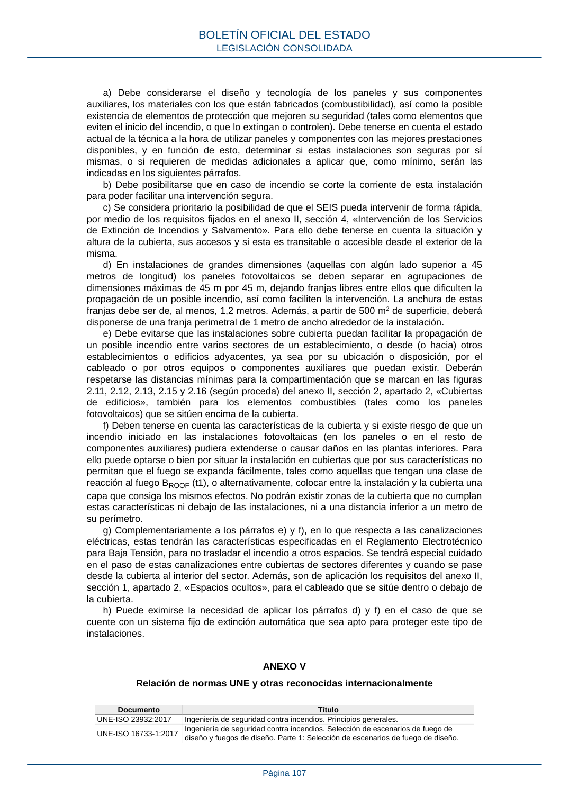

RSCIEI · edición 2025-04-10 · capa asociada
Documento RSCIEI-asociada · SHA-256 del PDF 85aa0af25d51e5b58d8975a4eefbf76d3f57a8933445cfe814ae9c4818a2e3e7
Copia fiel del PDF fuente · Fuente oficial
Ficha de la disposición en la fuente oficial
Texto extraído y reorganizado: Basado en datos de la Agencia Estatal Boletín Oficial del Estado. PDF reproducido: Fuente de los datos: Agencia Estatal Boletín Oficial del Estado.
Formatos: JSON del segmento · Markdown
a) Debe considerarse el diseño y tecnología de los paneles y sus componentes auxiliares, los materiales con los que están fabricados (combustibilidad), así como la posible existencia de elementos de protección que mejoren su seguridad (tales como elementos que eviten el inicio del incendio, o que lo extingan o controlen). Debe tenerse en cuenta el estado actual de la técnica a la hora de utilizar paneles y componentes con las mejores prestaciones disponibles, y en función de esto, determinar si estas instalaciones son seguras por sí mismas, o si requieren de medidas adicionales a aplicar que, como mínimo, serán las indicadas en los siguientes párrafos. b) Debe posibilitarse que en caso de incendio se corte la corriente de esta instalación para poder facilitar una intervención segura. c) Se considera prioritario la posibilidad de que el SEIS pueda intervenir de forma rápida, por medio de los requisitos fijados en el anexo II, sección 4, «Intervención de los Servicios de Extinción de Incendios y Salvamento». Para ello debe tenerse en cuenta la situación y altura de la cubierta, sus accesos y si esta es transitable o accesible desde el exterior de la misma. d) En instalaciones de grandes dimensiones (aquellas con algún lado superior a 45 metros de longitud) los paneles fotovoltaicos se deben separar en agrupaciones de dimensiones máximas de 45 m por 45 m, dejando franjas libres entre ellos que dificulten la propagación de un posible incendio, así como faciliten la intervención. La anchura de estas franjas debe ser de, al menos, 1,2 metros. Además, a partir de 500 m2 de superficie, deberá disponerse de una franja perimetral de 1 metro de ancho alrededor de la instalación. e) Debe evitarse que las instalaciones sobre cubierta puedan facilitar la propagación de un posible incendio entre varios sectores de un establecimiento, o desde (o hacia) otros establecimientos o edificios adyacentes, ya sea por su ubicación o disposición, por el cableado o por otros equipos o componentes auxiliares que puedan existir. Deberán respetarse las distancias mínimas para la compartimentación que se marcan en las figuras 2.11, 2.12, 2.13, 2.15 y 2.16 (según proceda) del anexo II, sección 2, apartado 2, «Cubiertas de edificios», también para los elementos combustibles (tales como los paneles fotovoltaicos) que se sitúen encima de la cubierta. f) Deben tenerse en cuenta las características de la cubierta y si existe riesgo de que un incendio iniciado en las instalaciones fotovoltaicas (en los paneles o en el resto de componentes auxiliares) pudiera extenderse o causar daños en las plantas inferiores. Para ello puede optarse o bien por situar la instalación en cubiertas que por sus características no permitan que el fuego se expanda fácilmente, tales como aquellas que tengan una clase de reacción al fuego BROOF (t1), o alternativamente, colocar entre la instalación y la cubierta una capa que consiga los mismos efectos. No podrán existir zonas de la cubierta que no cumplan estas características ni debajo de las instalaciones, ni a una distancia inferior a un metro de su perímetro. g) Complementariamente a los párrafos e) y f), en lo que respecta a las canalizaciones eléctricas, estas tendrán las características especificadas en el Reglamento Electrotécnico para Baja Tensión, para no trasladar el incendio a otros espacios. Se tendrá especial cuidado en el paso de estas canalizaciones entre cubiertas de sectores diferentes y cuando se pase desde la cubierta al interior del sector. Además, son de aplicación los requisitos del anexo II,
